Boss（Veltharis）C5 上挑：快斬連段的第三擊
還沒接進遊戲。前兩刀和快斬連段二連是同一組圖。第二刀揮完（劍在右後方低處、右手單手）接著往下沉：上身再往右扭、彎腰蹲低，左手從左邊伸過來握回劍柄（重擊雙手），劍往右後方壓低、劍尖快碰到地面，停一下（讀得出「要往上撈」）。上挑：腳一蹬、髖往上，彎腰收回、往後挺，上身從右轉到左，雙手把劍從右後方低處往前、往上撈過去：判定一開始劍在右前方低處，到正前方時劍尖在判定的邊上、主角的高度，判定結束時在左前方往上。劍一路舉到左肩上方停一下（收招的空檔），再放下到身前、立在右肩前、放回右肩，右腳收回來。兩隻腳整招都不離開原位（左腳只用腳掌轉）。四個方向：朝下、朝右、朝上、朝左（朝左不是鏡像）。刀光由程式畫，這裡沒有。
關鍵姿勢（四個方向，2 倍）
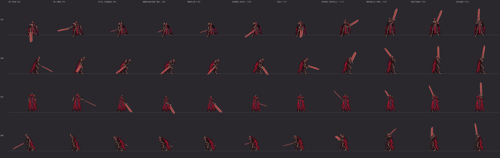
上挑的關鍵姿勢（從精靈圖直接切出來的）
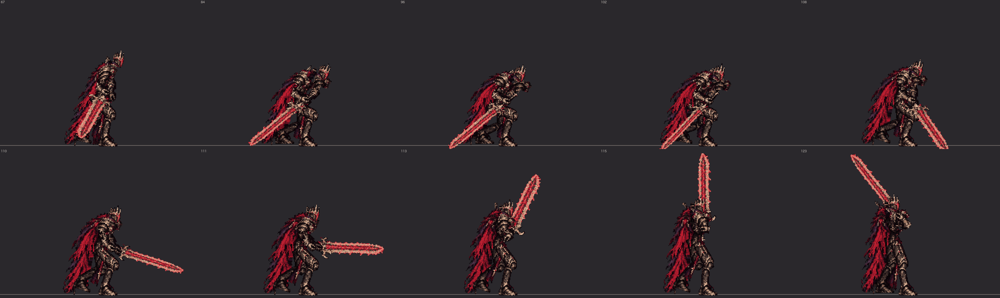
側面 3 倍：第二刀揮完、往下沉、停住、往上撈、判定（108–113）、舉到左肩上方
遊戲裡會看到的順序
快斬連段三連（一階段）：扛劍站著 → 第一刀 → 第二刀 → 往下沉、雙手握劍、劍壓在右後方低處 → 上挑（判定 0.1 秒）→ 劍舉到左肩上方停一下 → 收招 → 扛劍站著（原地，2 倍）
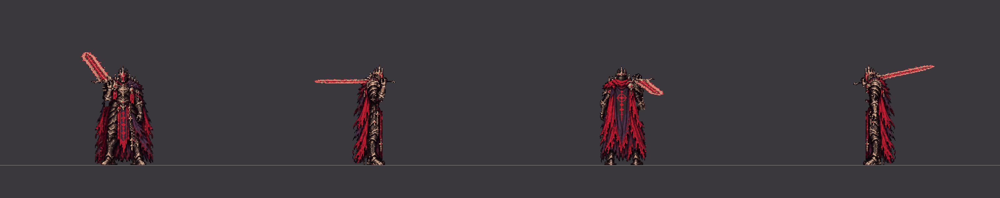
四個方向（2 倍）
朝下（60fps，3 倍）朝右（60fps，3 倍）朝上（60fps，3 倍）朝左（60fps，3 倍）二階段：收招縮短成 0.675 秒（同一組圖）
四個方向（2 倍）
朝下（60fps，3 倍）朝右（60fps，3 倍）朝上（60fps，3 倍）朝左（60fps，3 倍）往前走時出招（從走路循環第 10 張接快斬的開頭，一樣的圖）
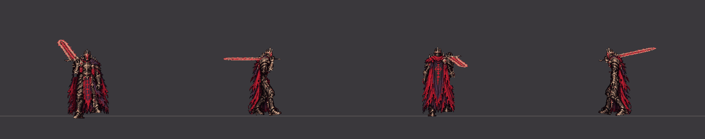
四個方向（2 倍）
朝下（60fps，3 倍）朝右（60fps，3 倍）朝上（60fps，3 倍）朝左（60fps，3 倍）上挑在劍到正前方的那一刻被完美彈返：被彈開 1.2 秒 → 扛劍站著
四個方向（2 倍）
朝下（60fps，3 倍）朝右（60fps，3 倍）朝上（60fps，3 倍）朝左（60fps，3 倍）
握劍的手（放大 4 倍）
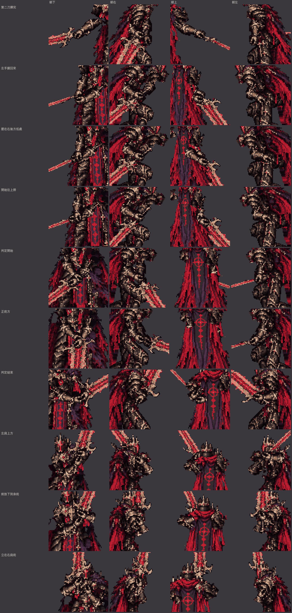
第二刀揮完、左手握回來、壓在右後方低處、開始往上撈、判定開始、正前方、判定結束、左肩上方、劍放下到身前、立在右肩前
側面的腿（只畫腿，綠線＝靠鏡頭的右腿，藍線＝左腿；每一張）
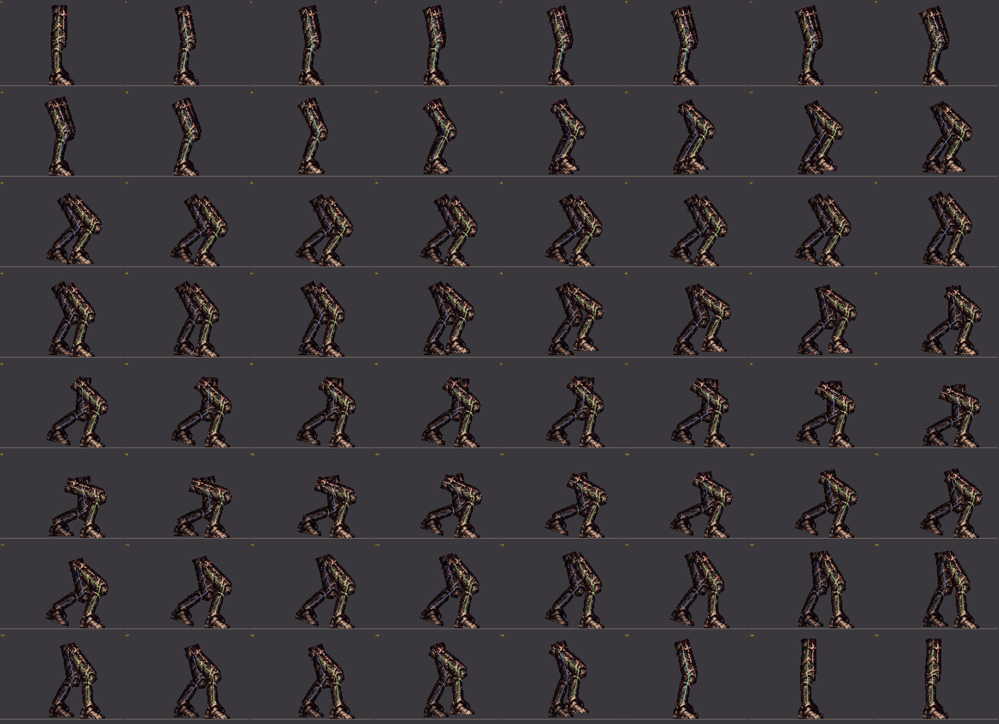
快斬連段三連（兩段單手快斬 → C5 上挑，雙手）（每一張，左上角是第幾個戰鬥幀）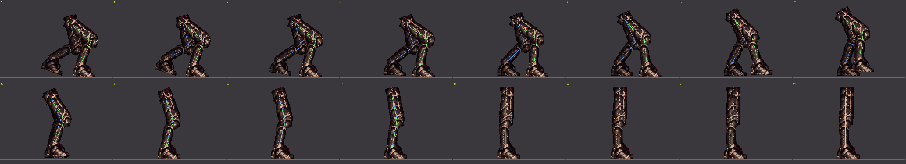
上挑被彈開（每一張，左上角是第幾個戰鬥幀）
逐張
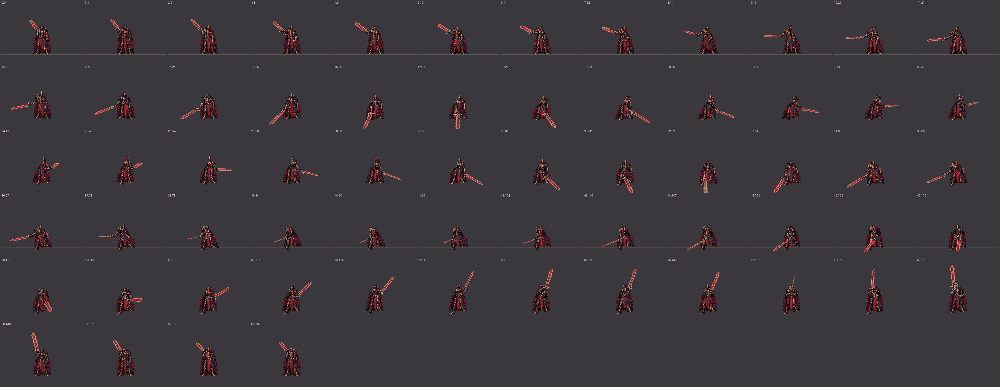
快斬連段三連（兩段單手快斬 → C5 上挑，雙手） 朝下（第幾張：從出招開始的第幾個戰鬥幀）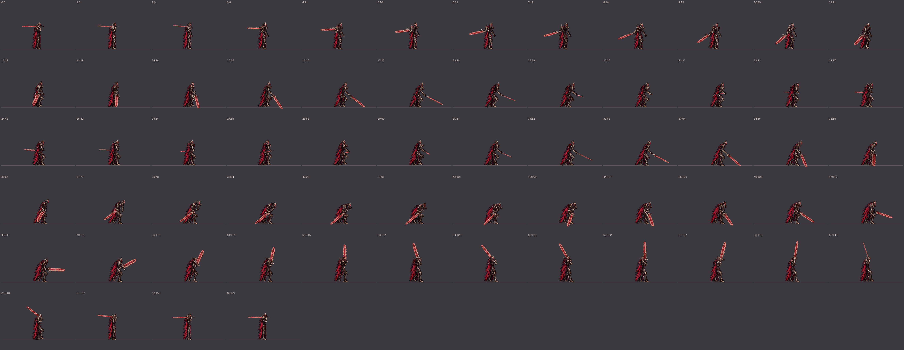
快斬連段三連（兩段單手快斬 → C5 上挑，雙手） 朝右（第幾張：從出招開始的第幾個戰鬥幀）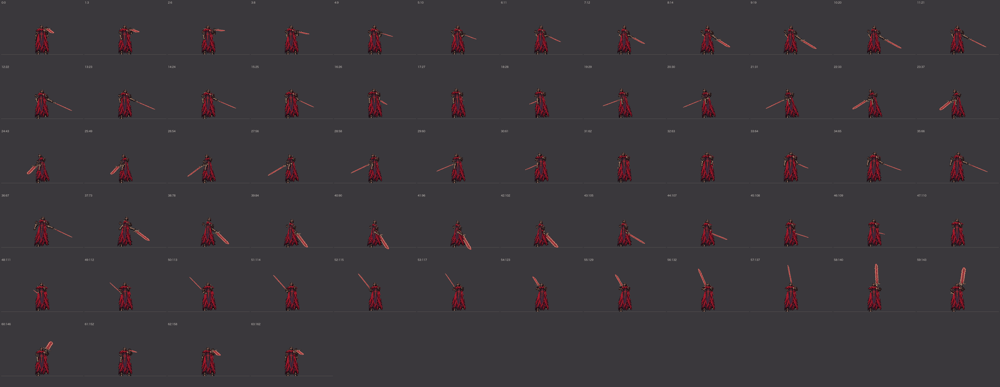
快斬連段三連（兩段單手快斬 → C5 上挑，雙手） 朝上（第幾張：從出招開始的第幾個戰鬥幀）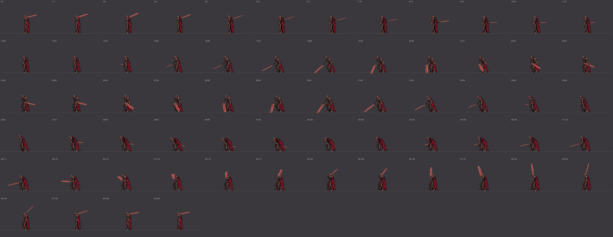
快斬連段三連（兩段單手快斬 → C5 上挑，雙手） 朝左（第幾張：從出招開始的第幾個戰鬥幀）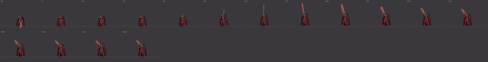
上挑被彈開 朝下（第幾張：從出招開始的第幾個戰鬥幀）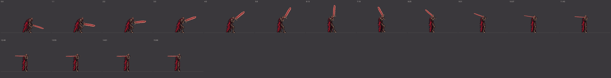
上挑被彈開 朝右（第幾張：從出招開始的第幾個戰鬥幀）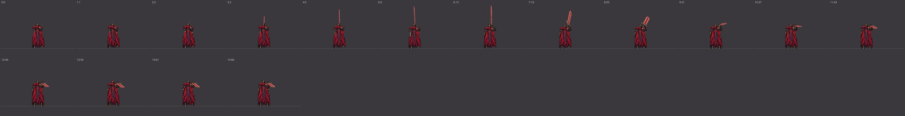
上挑被彈開 朝上（第幾張：從出招開始的第幾個戰鬥幀）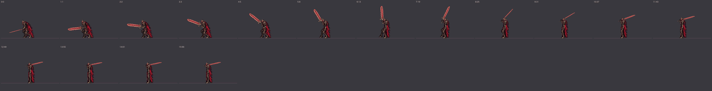
上挑被彈開 朝左（第幾張：從出招開始的第幾個戰鬥幀）